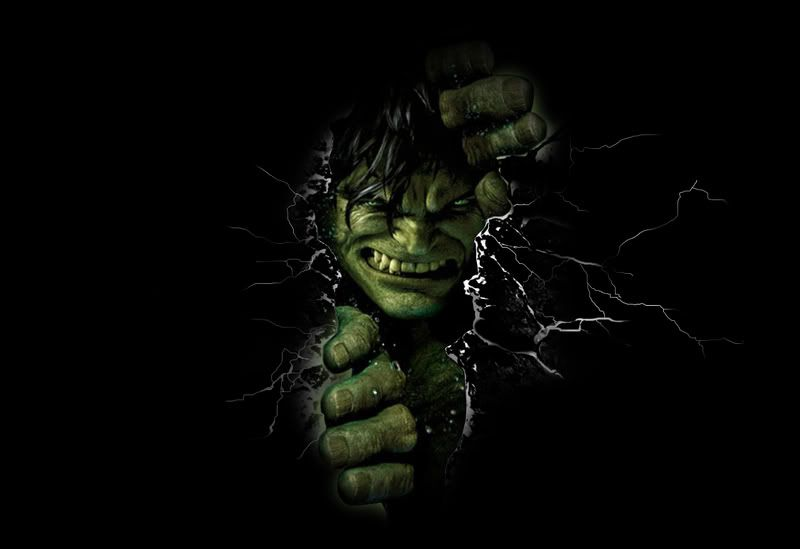

|  | BIOGRAFIA |
|---|---|
|
Bruce Banner era um cientista brilhante especializado em radiação gama. Durante um experimento que deu errado,
ele foi exposto a uma quantidade massiva de energia. Em vez de morrer, seu corpo se transformou no Hulk
uma criatura colossalde força ilimitada, despertada sempre que Bruce sente emoções intensas. Agora,
Banner luta para controlar o monstro dentro de si, enquanto o Hulk se torna tanto uma ameaça quanto um herói,
dependendo da situação. | |
| ARMAS | |
|
Punhos Monstruosos: Golpes devastadores capazes de destruir estruturas inteiras. Raiva: Quanto mais irritado Hulk fica, mais forte se torna. | |
| Habilidades | |
|
Regeneração Acelerada: Cura ferimentos gravíssimos em poucos instantes. Saltos Gigantescos: Pode saltar quilômetros de distância com uma única impulsão. Resistência Absurda: Praticamente imune a armas comuns e choques enormes. |